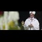

<html>
 <head>
  <title>
   Pope Francis accussed of selectivism in handling of child-sex abuse cases by Priests, amid concerns he will roll back reforms.
  </title>
  <meta content="Post on /v/Pizzagate archived on 2017-01-03 by checksandbalances." name="description"/>
  <meta content="Pope Francis accussed of selectivism in handling of child-sex abuse cases by Priests, amid concerns he will roll back reforms." property="og:title"/>
  <meta content="Post on /v/Pizzagate archived on 2017-01-03 by checksandbalances." property="og:description"/>
  <link href="../../page.css" rel="stylesheet"/>
  <meta content="https://voat.pizzagate.hackliberty.org/thumbnails/ad/29/ad29e80f-a737-4526-b4d2-66bdf3f2332e.jpg" property="og:image"/>
  <meta content="https://voat.pizzagate.hackliberty.org/v/pizzagate/1534657.html" property="og:url"/>
 </head>
</html>
<body class="dark">
 <div id="container">
  <!-- array (
  'submissionid' => 1534657,
  'creationDate' => '2017-01-03 16:30:01',
  'domain' => 'theweek.com',
  'formattedContent' => NULL,
  'isAdult' => 0,
  'isAnonymized' => 0,
  'subverse' => 'pizzagate',
  'thumbnail' => 'ad29e80f-a737-4526-b4d2-66bdf3f2332e.jpg',
  'title' => 'Pope Francis accussed of selectivism in handling of child-sex abuse cases by Priests, amid concerns he will roll back reforms.',
  'url' => 'http://theweek.com/articles/670249/child-abuse-scandal-coming-pope-francis',
  'userName' => 'checksandbalances',
  'archivedLink' => NULL,
  'archivedDomain' => NULL,
  'isDeleted' => 0,
) -->
  <div style="text-align:center; font-size:24px; font-weight:bold;">
   Voat /v/Pizzagate Archive
  </div>
  <div class="content" role="main">
   <div class="sitetable linklisting" id="siteTable">
    <div class="submission id-1534657 link type-text" id="submission-1534657">
     <a name="submissionTop">
     </a>
     <p class="parent">
     </p>
     <a class="thumbnail may-blank" href="http://theweek.com/articles/670249/child-abuse-scandal-coming-pope-francis" target="_self">
      
     </a>
     <div class="entry unvoted">
      <p class="title">
       <a class="title may-blank" href="http://theweek.com/articles/670249/child-abuse-scandal-coming-pope-francis" tabindex="1" target="_self" title="Pope Francis accussed of selectivism in handling of child-sex abuse cases by Priests, amid concerns he will roll back reforms.">
        Pope Francis accussed of selectivism in handling of child-sex abuse cases by Priests, amid concerns he will roll back reforms.
       </a>
       <span class="domain">
        (
        <a href="https://archive.searchvoat.co/search.php?d=theweek.com">
         theweek.com
        </a>
        )
       </span>
      </p>
      <p class="tagline">
       submitted
       <time datetime="2017-01-03T16:30:01+00:00" title="01/03/2017 4:30:01 PM">2017-01-03T16:30:01</time> by
       <span class="userattrs">
        <a class="author may-blank" href="https://archive.searchvoat.co/search.php?u=checksandbalances">
         checksandbalances
        </a>
       </span>
      </p>
      <ul class="flat-list buttons">
       <li class="first">
        <a class="comments may-blank" href="https://archive.searchvoat.co/v/pizzagate/1534657" rel="nofollow">
         2 comments
        </a>
       </li>
      </ul>
     </div>
     <div class="child">
     </div>
     <div class="clearleft">
     </div>
    </div>
    <div class="clearleft">
    </div>
   </div>
   <div class="horizontal-line">
   </div>
   <div class="commentarea">
    <div class="sitetable nestedlisting" id="siteTable">
     <div class="child id-7474854 comment even" style="">
      <div class="entry unvoted">
       <div class="noncollapsed" id="7474854" style=";">
        <p class="tagline">
         <a class="author may-blank" href="https://archive.searchvoat.co/search.php?u=DarkFae">
          DarkFae
         </a>
         <span class="userattrs">
         </span>
         <time datetime="2017-01-04T01:55:12+00:00" title="1/4/2017 1:55:12 AM">2017-01-04T01:55:12</time>
        </p>
        <div class="usertext-body may-blank-within" id="commentContent-7474854">
         <div class="md">
          <p>
           <p>
            I've found this to be helpful in other investigations
           </p>
           <p>
            <a href="http://www.bishop-accountability.org/member/index.jsp">
             http://www.bishop-accountability.org/member/index.jsp
            </a>
           </p>
          </p>
         </div>
        </div>
        <ul class="flat-list buttons">
         <li class="first">
          <a class="bylink" href="https://archive.searchvoat.co/v/pizzagate/1534657/7474854" rel="nofollow">
           link
          </a>
         </li>
        </ul>
       </div>
      </div>
     </div>
     <div class="child id-7468479 comment even" style="">
      <div class="entry unvoted">
       <div class="noncollapsed" id="7468479" style=";">
        <p class="tagline">
         <a class="author may-blank" href="https://archive.searchvoat.co/search.php?u=checksandbalances">
          checksandbalances
         </a>
         <span class="userattrs">
         </span>
         <time datetime="2017-01-03T16:42:09+00:00" title="1/3/2017 4:42:09 PM">2017-01-03T16:42:09</time>
        </p>
        <div class="usertext-body may-blank-within" id="commentContent-7468479">
         <div class="md">
          <p>
           <p>
            Accusations of preferential treatment by priests accused of child molestation under Pope Francis, and his desire to roll back some of the reforms prior Popes have instituted to address Priests that have been accused of molestation. While the Catholic-child abuse scandals are not directly related to Pizzagate (though there are certainly some overlaps, as with the Hollywood pedo-rings, that occur), I included this article as related to the sub both because of the references of am impending child-sex-abuse scandal and because the favoritism it references results from connections to Cardinals, and the U.S. has insanely high concentration of cardinals in the NY/Boston/DC-metro area (Wuerl, NY; Tobin, NJ; Rigali, Pa; O'Malley, Ma; McCarrick, DC; Keeler, Maryland; and Dolan, NY; from what I quickly googled), which are names and connections we may want to keep an eye out for.
           </p>
          </p>
         </div>
        </div>
        <ul class="flat-list buttons">
         <li class="first">
          <a class="bylink" href="https://archive.searchvoat.co/v/pizzagate/1534657/7468479" rel="nofollow">
           link
          </a>
         </li>
        </ul>
       </div>
      </div>
     </div>
    </div>
   </div>
  </div>
 </div>
 <div class="footer-container">
 </div>
</body>
